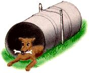

An inexpensive and easy-to-make doghouse can be created very quickly by using an old 50-gallon barrel. The barrel, with one end cut out of it, makes a good shelter where Fido can get out of the wind and rain. With a little straw for bedding, the barrel makes a comfortable home.
To keep the barrel stable and secure, stakes can be driven into the ground on either side of it to stop it from rolling about. The barrel can also be wired to the stakes, with the wires going over the top of the barrel and fastened to the stakes on either side. This will ensure that it does not move about or become dislodged by a rambunctious dog. The stakes can also serve as a solid anchor for a chain, if the dog is to be tied.
Heather Thomas, Salmon, ID
(January 1997)
|
 |
|
|